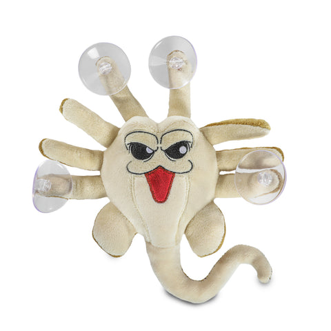
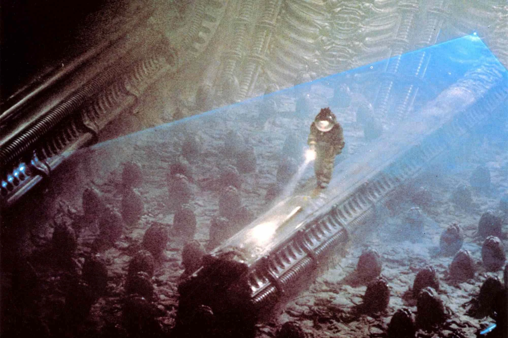
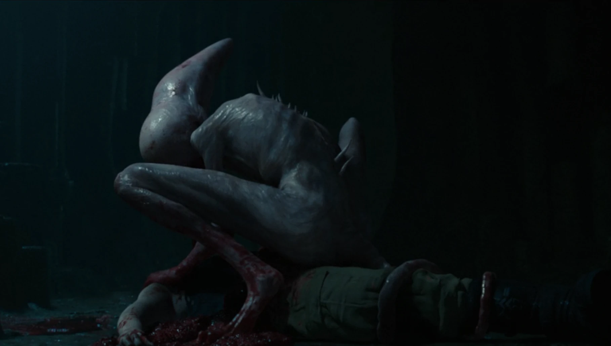
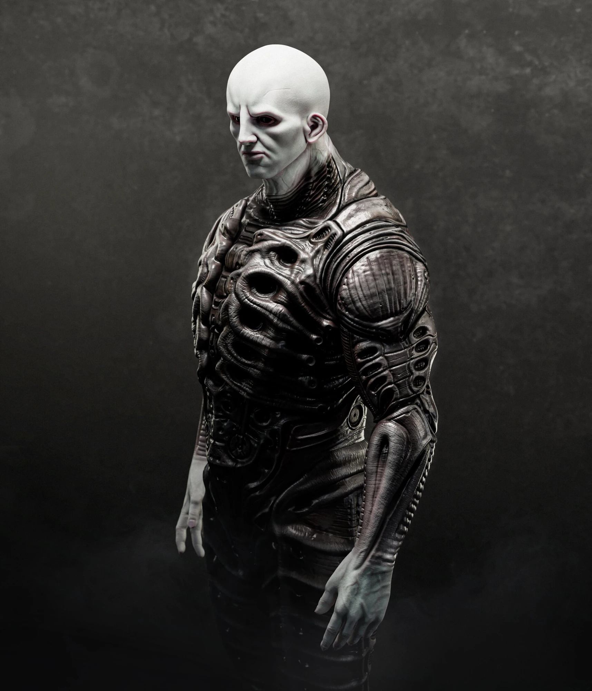
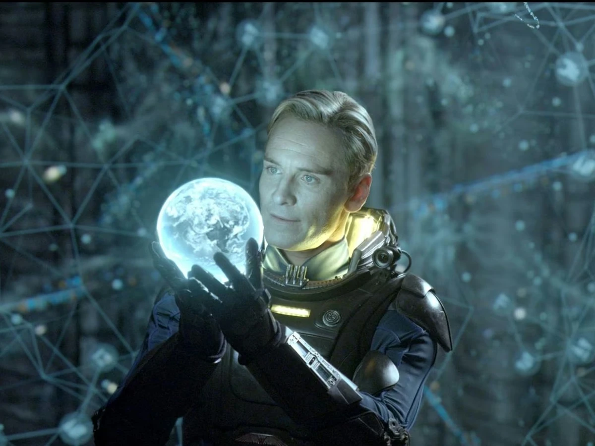
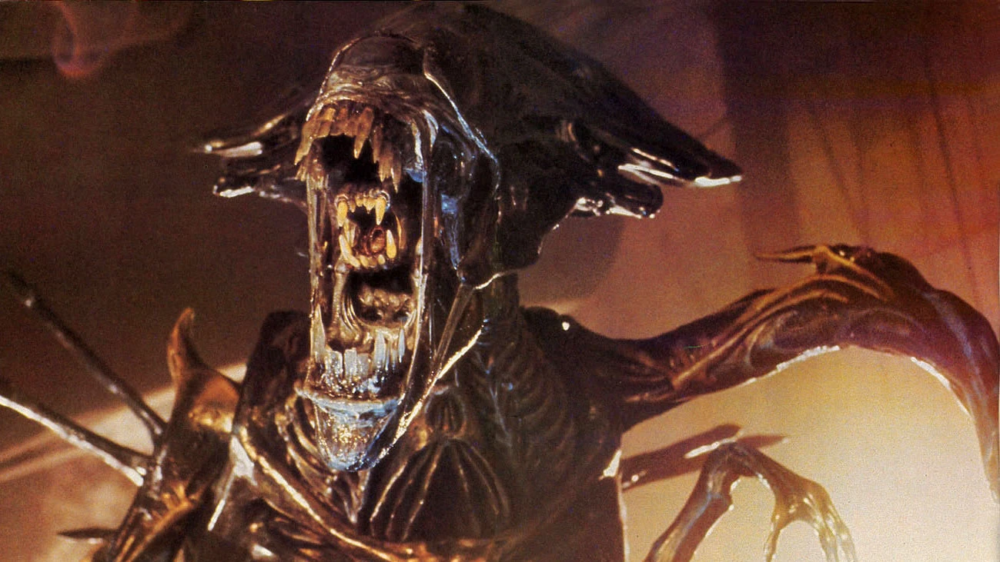
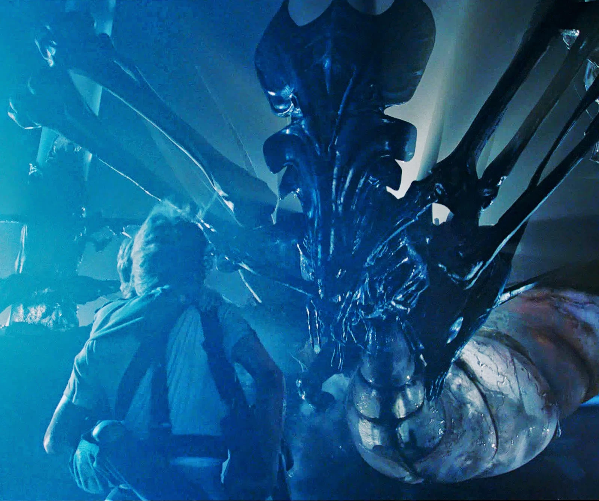

Jump to: Anatomy | Life Cycle | Types | Your Notes
What Is It?

The Xenomorph's inner jaw extending from its mouth. (cults3d.com)
The Xenomorph is the iconic creature at the center of the franchise. It has a hard, black exoskeleton, a long bladed tail, and acidic blood. As a parasitic species, it cannot reproduce on its own and must implant its young inside a living host.
Its elongated, eyeless head is one of the most recognizable designs in science fiction. The most unsettling feature, however, is its mouth: inside its main jaws sits a second, smaller set of jaws that can extend forward to strike, as shown in the image.
Xenomorphs are also highly intelligent. Throughout the films, they travel through air vents, cut power to entire facilities, and coordinate their attacks to trap prey.
Combined with their speed, strength, and ability to move silently across walls and ceilings, this makes them extremely difficult to detect before they strike.
Anatomy
The chart below labels the major parts of a Xenomorph's anatomy, including its inner jaw, acid reservoir, and bladed tail.

A labeled diagram of Xenomorph anatomy. (Art by Topher Stoll)
Download this chart
Life Cycle

A facehugger... in plush toy form. (kidrobot.com)
- Egg - laid by the Queen; it remains dormant until a potential host comes near.
- Facehugger - attaches to the host's face and implants an embryo down its throat.
- Chestburster - bursts violently from the host's chest, killing it.
- Cocoon - the chestburster encases itself in a hardened shell in order to mature rapidly.
- Adult - emerges from the cocoon fully grown, standing roughly seven feet tall.
- Queen - the largest caste, responsible for laying all of the hive's eggs.
In my opinion, the chestburster is the most disturbing stage of the life cycle.

Kane discovers the egg chamber in Alien (1979). (ew.com)
The Cocoon Stage
The cocoon stage was introduced in Alien: Romulus (2024). After emerging from its host, the chestburster secretes a translucent, resin-like shell around itself. Within minutes it develops into a full-grown adult, then tears its way out.
Many fans welcomed this addition because it finally explains something the earlier films left unanswered: how a small chestburster grows into a massive adult so quickly.

A chestburster maturing into an adult inside its cocoon. (Alien fan art)
Neomorphs
Alien: Covenant (2017) introduced small black egg sacs growing on the surface of the Engineers' planet. When disturbed, they release a cloud of microscopic spores that enter a victim through the ear or nose.
The infected person then becomes a host for a Neomorph, a pale, aggressive creature that bursts out of the host's back rather than the chest.

A Neomorph in Alien: Covenant (2017). (ign.com)
Where Do Xenomorphs Come From?

An Engineer, the ancient race behind the black goo. (jasonfoo21.artstation.com)
The films never provide a single definitive answer, but there are three leading explanations:
- The Black Goo - In Prometheus, the Engineers, an ancient alien race, possess a black pathogen that mutates any living organism it touches. It appears to have been designed as a biological weapon.
- David's Experiments - In Alien: Covenant, the android David spends a decade experimenting with the black goo, eventually engineering the eggs and facehuggers seen in the original film.
- A Natural Species - Older Alien comics and novels portray the Xenomorph as a naturally evolved predator from a hostile home world, which would explain its acidic blood and armored exoskeleton.
In my view, the Xenomorph is most likely a natural species, but the Engineers may have altered it over time.

The android David in Prometheus (2012). (theatlantic.com)
Types of Xenomorphs

The Xenomorph Queen in Aliens (1986). (weylanduplink.com)
| Type | First Movie | Notes |
|---|---|---|
| Drone | Alien (1979) | Standard adult form |
| Warrior | Aliens (1986) | Defends the hive |
| Runner | Alien 3 (1992) | Faster, four-legged variant |
| Queen | Aliens (1986) | Leader of the hive; lays the eggs |

Ripley protects Newt from the Queen in Aliens (1986). (alienexplorations.blogspot.com)
Your Notes
Use the boxes below to record your own observations about the species.
Internecivus raptus
Type your notes here...